Spiking neural networks for time series predictions
Deep neural networks (DNN) are certainly one of the major advances of the last decades. On one hand, their performance comes from the computation complexity and the energy consumption. On the other hand, SNN offer models with cheaper computation complexity and a budgetary reduction of the energy consumption. SNN bring excellent performances along for task classification such as on images and sound. This network is often found in time series processing with their ability of classification.
What are Spiking neural networks ?
SNN have a different approach on information transmission from standard neural networks. They try to imitate biological neural networks. Instead of changing the values over time, SNN work on discrete events which are produced in specific moments. They receive peak series as input and produce time series as output.
Overview of Spiking neural networks
For every time-step, each neuron has some values which are analogous to a electric potential of biological neurons. This value in the neuron can change based on the mathematical model of the neuron. If the value is higher than a threshold, the neuron sends only one impulse for each neuron downstream of it. Finally, the value of the neuron is set under his mean value. After some time, the value of the neuron is back to the mean value.
Several models
SNN are built on the mathematical descriptions of biological neurons. There are two groups of methods which are used to model SNN :
models based on conductance which describe how actions in neurons are initiated and spread
models with a threshold which generate a spike for a given threshold
Leaky Integrate-and-fire
We are going to understand how the model Leaky Integrate-and-fire works. We start with its theoretical circuit. There are two cases to study and we need to find their equation and solution: 1. \(I \ne 0\) 2. \(I = 0\) where \(I\) denotes the intensity of the current.
Case where \(I \ne 0\)

We apply the Kirchhoff’s current law on the green point : \[ I_e = I_{s_1} + I_{s_2} \] We use the characteristic relation of a resistor (Ohm’s law): \[ U = RI \]
And the characteristic relation of a capacitor : \[ I = C \times \frac {dU}{dt} \]
We represent the intensity as \(I(t)\) and the tension as \(V_m(t)\). Thus we get the following relation: \[ I(t) = \frac{V_m(t)}{R_m} + C_m \frac{dV(m)}{dt} \] \[ \boxed{C_m \frac{dV(m)}{dt} = I(t) - \frac{V_m(t)}{R_m}} \]
Resolution of the differential equation
Homogeneous solution
\[ \frac{dV(m)}{dt} + \frac{V_m(t)}{R_m C_m} = 0 \]
We set \(\tau = R_m C_m\). Then we get: \[ V_m(t) = A e^{\frac{-t}{\tau}} \] where \(A\) is the integration constant of the problem.
Particular solution
We assume that \(I(t)\) is constant. The particular solution has the same form of the second member of the equation. In other words, \(\frac{dV(m)}{dt} = 0\).
\[ \implies V_m(t) = R_m I(t) \]
General solution
\[ V_m(t) = A e^{\frac{-t}{\tau}} + R_m I(t) \]
We assume that \(V_m(0^+) = V_m(0^-) = 0\). Thus, we get: \[ A + R_m I = 0 \iff A = - R_m I \]
So:
\[ \boxed{V_m(t) = R_m I(1 - e^{\frac{-t}{\tau}})} \]
Calculation of the firing frequency
The model can become more precise by introducing a refractory time in which the neuron can not be discharged. We are interesting to evaluate the frequency when \(I > I_{th}\) (when \(V_m(t)\) is constant, \(I_{th} = \frac{V_{th}}{R_m}\)): \[ \begin{align} & V_{th} = R_m I(1 - e^{\frac{-(t - t_{ref})}{\tau}}) \\ \iff & e^{\frac{-(t - t_{ref})}{\tau}} = 1 - \frac{V_{th}}{I R_m} \\ \iff & \frac{-(t - t_{ref})}{\tau} = \log{(1 - \frac{V_{th}}{I R_m})} \\ \iff & t = t_{ref} - \tau \log{(1 - \frac{V_{th}}{I R_m})} \end{align} \]
Then, we can define the firing frequency with the inverse of the total gap between the impulses (including the down-time). The firing frequency is then :
\[ \boxed{ f(I) = \left\{\begin{array}{ll} 0, & I \le I_{th} \\ \left[t_{ref} - \tau \log{\left(1 - \frac{V_{th}}{I R_m}\right)}\right]^{-1}, & I > I_{th} \end{array}\right. } \]
Case where \(I = 0\)
We apply the Kirchhoff’s current law on the green point : \[ I_{s_1} + I_{s_2} = 0 \]
We get the following relation : \[ \frac{V_m(t)}{R_m} + C_m \frac{dV(m)}{dt} = 0 \] \[ \boxed{\frac{dV(m)}{dt} + \frac{V_m(t)}{\tau} = 0} \]
with \(\tau = R_m C_m\)
Solution of the differential equation
\[ V_m(t) = A e^{\frac{-t}{\tau}} \]
where \(A\) is the integration constant of the problem.
We assume \(V_m(0) = I R_m\). Thus : \[ A = I R_m \]
We get then :
\[ \boxed{V_m(t) = I R_m e^{\frac{-t}{\tau}}} \]
Conclusion
We recall that \(\tau\) is characterized of the duration which makes the start-up level to disappear to be replaced by the permanent permanent. The permanent level is reached after several \(\tau\) (\(\approx 5 \tau\)). We can do the analogy \(V_m\), the tension of bounds of the cellular membrane and \(R_m\) the membrane resistance.

Benefits - the model will not keep an increase of the tension for ever contrary to other models without leak where it is kept until the appearance of a new impulse.
Drawbacks - the model does not take into account the neuronal adaptation, so that it can not describe spike series.
Architecture of a SNN
Even if SNN have an unique concept, they stay a neural network. We can find :
How to train a Spiking Neural Network ?
Unfortunately, still today, there is no efficient supervised learning method which can train a SNN. Operations of SNN can not allow the usage of classical learning methods which are appropriated for a traditional neural network. The learning method for SNN can be a tough task.
Spike-Timing-Dependent Plasticity (STDP)
It is a unsupervised learning mechanism. The training is realized layer by layer, in other words, the training of the current layer is made when the training of the previous layer is finished. Neurons of the layer compete with each other and those which fire quickly, trigger a STDP and learn from inputs:
\[ \Delta \omega_{ij} = \left\{ \begin{array}{c} a^+ \omega_{ij}(1 - \omega_{ij}), & si & t_j - t_i \le 0 \\ a^- \omega_{ij}(1 - \omega_{ij}), & si & t_j - t_i > 0 \end{array} \right. \] where \(i\) and \(j\) respectively refer at the index of postsynaptic neurons and presynaptic neurons, \(t_i\) and t_j$ are the time related of spikes, \(\Delta \omega_{ij}\) is the modification of synaptic weights and \(a^+\) and \(a^-\) are two specific learning rates.
We measure the learning convergence of the \(l\)-nth layer under the shape :
\[ C_l = \sum_f \sum_i \frac{\omega_{f,i}(1 - \omega_{f,i})}{n_\omega} \]
where \(C_l\) tends to \(0\) if each of synaptic weights converge to \(0\) or \(1\). Therefore, we stop the \(l\)-nth layer learning when \(C_l\) is enough close to \(0\) (i.e. \(C_l < 0.01\)).
Scope for SNN
- Prosthetist : vision and auditive neuroprosthesis
- Robotics : Brain Corporation develop robots using SNN et SyNAPSE develop processors and neuromorphic systems.
- Computing Vision : digital neuroprocesseur IBM TrueNorth includes millions of programmable neurons and 256 millions of programmable synapses to simulate the operation of neurons of vision cortex.
- Telecommunication : Qualcomm is actively on the possibility to integrate SNN in telecommunication devices.
Some results
| Architecture | Neural Coding | Learning-type | Learning-rule | Accuracy (%) |
|---|---|---|---|---|
| Dendritic neurons | Rate-based | Supervised | Morphology learning | 90.3 |
| Convultional SNN | Spike-based | Supervised | Tempotron rule | 91.3 |
| Two layer network | Spike-based | Unsupervised | STDP | 93.5 |
| Spiking RBM | Rate-based | Supervised | Contrastive divergence | 94.1 |
| Two layer network | Spike-based | Unsupervised | STDP | 95.0 |
| Convultional SNN | Rate-based | Supervised | Back-propagation | 99.1 |
| Proposed SDNN | Spike-based | Unsupervised | STDP | 98.4 |
Conclusion
Contrary to classical neural networks where the output is a modulation of the signal intensity (activation function), the output is immediate, here, we apply a modulation over time on SNN where the output is an accumulation of impulses over time. To train a SNN, we must apply new learning methods. SNN are high-performance for vocal recognition or computer vision.